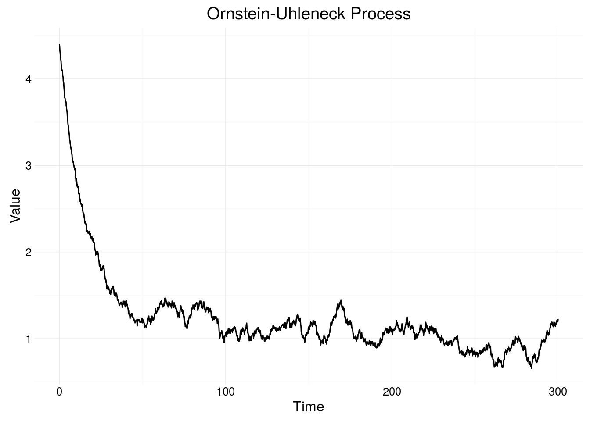
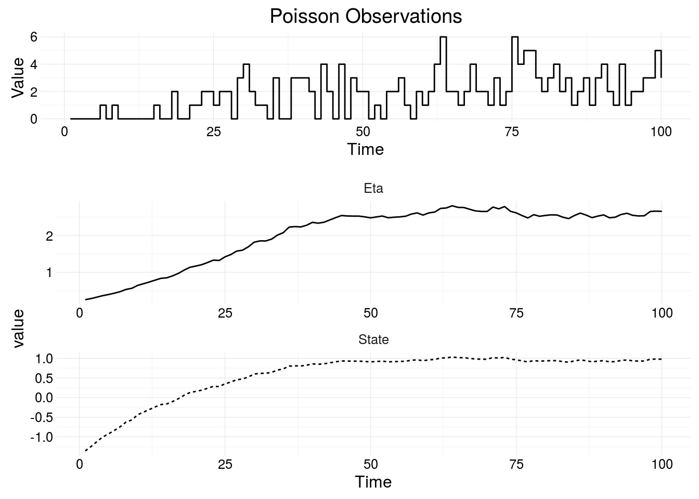
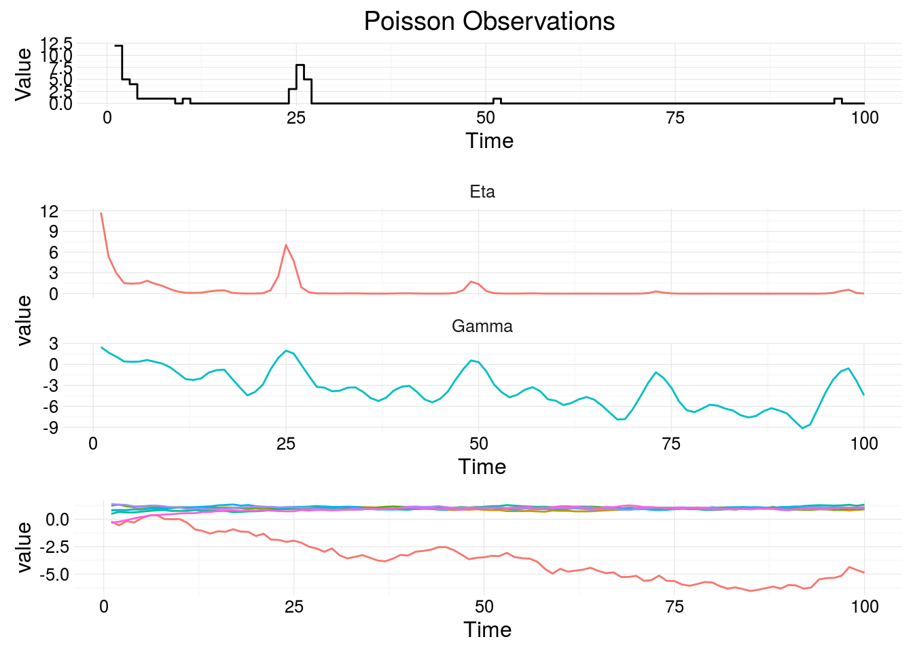
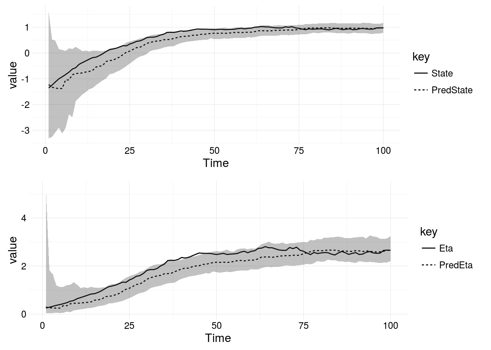

Composable State Space Models
This is the documentation for a https://git.io/statespace (POMP). Partially observed Markov processes can be used to model time series data, allowing interpolation and forecasting.
Introduction to Partially Observed Markov Process Models
Partially observed Markov processes are a type of State Space Model. This means the models feature unobserved, or latent, variables. The unobserved system state is governed by a diffusion process, these are continuous time Markov processes meaning that future values of the state space, are independent from all previous values given the current state, x(t). A representation of a POMP model as a directed acyclical graph is below.

Representation of a POMP model as a Directed Acyclic Graph (DAG)
The distribution, p, represents the Markov transition kernel of the state space. The distribution pi, represents the observation distribution, parameterised by the state space. The function f is a linear deterministic function, which can be used to add cyclic seasonal components to the state space. The function g is the linking-function from a generalised linear model, which transforms the state space into the parameter space of the observation model. Define \(\gamma(t) = F^T_t \textbf{x}(t)\) and \(\eta(t) = g(\gamma(t))\).
Simulating the State Space
An example of a diffusion process is the Ornstein-Uhlenbeck process, which can be simulated by specifying the parameters of the process, theta, the mean of the process, alpha how quickly the process reverts to the mean and sigma the noise of the process. Then we must specify an initial state, which is done by drawing from a Gaussian distribution, since the exact solution to the OU process is a Gaussian distribution. Then we pass a stepFunction containing the exact solution to the OU process, relying on only the previous value of the realisation (because the process is Markovian) and the time difference between realisations.
import model.StateSpace._
import model.State._
import model.OrnsteinParameter
import model.SimData._
import breeze.stats.distributions.Gaussian
val p = OrnsteinParameter(theta = 1.0, alpha = 0.05, sigma = 1.0)
val initialState = LeafState(DenseVector(Gaussian(6.0, 1.0).draw))
val sims = simSdeStream(initialState, 0.0, 300.0, 1, stepOrnstein(p))Notice, the state space can be multidimensional, and as such is represented by a Vector. A single state is represented by a LeafState, this will become clear when considering composition of models. The figure below shows a representation of the Ornstein-Uhlenbeck process with theta = 6.0, alpha = 0.05, sigma = 1.0.

Simulating a Single Model
The observations of a POMP can be from any parameterised distribution. The observation distribution depends on the latent variables and sometimes on additional parameters not in the system state, such as a scaling parameter representing measurement noise. A simple non-gaussian observation model, used for representing count data is the Poisson distribution, parameterised by it’s rate \(\lambda(t)\). If we consider the rate, \(\lambda(t)\) to vary stochastically, then we can represent it using a POMP mode. Firstly select a representation of the state space, we will use the Ornstein-Uhlenbeck process from the previous example, then specify the parameters and the times the process should be observed. There is a LeafParameter class which combines the initial State, optional scale parameter and the state space parameters for a single model.
import model.{LeafParameter, GaussianParameter, OrnsteinParameter}
import model.SimData._
import model.POMP.PoissonModel
import model.StateSpace._
val p = LeafParameter(
GaussianParameter(-2.0, 1.0),
None,
OrnsteinParameter(theta = 2.0, alpha = 1.0, sigma = 1.0))
val mod = PoissonModel(stepOrnstein)
val times = (1.0 to 100.0 by 1.0).toList
val sims = simData(times, mod(p))
The figure shows the state space, which varies along the whole real line and the transformed state space and Eta, which varies in \(\mathbb{R}^+\) The linking function, g, is the log-link.
Composing Multiple Models
If we wish to consider more complex process, for instance a Poisson model with a seasonally varying rate, then we have to add deterministic values to the state before applying the observation distribution. The function, f, is a linear deterministic function which can be used to add seasonal factors to the system state.
Models are represented as a function from Parameters => Model, this means models are defined unparameterised. A function for combining two unparameterised models is Model.combine, this function is associative, but not commutative. This is because the function selects the leftmost Model’s observation and linking functions. The code snippet below shows how to construct a seasonal Poisson model, the observation distribution is Poisson, but the rate of an event occuring follows a daily (period T = 24) cycle if we assume count observations are made once every hour.
val poissonParams = LeafParameter(
GaussianParameter(0.0, 1.0),
None,
BrownianParameter(0.1, 0.3))
val seasonalParams = LeafParameter(
GaussianParameter(DenseVector(Array.fill(6)(0.0)),
diag(DenseVector(Array.fill(6)(1.0)))),
None,
BrownianParameter(Vector.fill(6)(0.1), Vector.fill(6)(0.4)))
val params = poissonParams |+| seasonalParams
val mod = BernoulliModel(stepBrownian) |+| SeasonalModel(24, 3, stepBrownian)
val times = (1.0 to 100.0 by 1.0).toList
val sims = simData(times, mod(params))
Statistical Inference: The Particle Filter
If we have a fully specified model, ie the posterior distributions of the parameters given the data so far are available to us, then we can use a bootstrap particle filter (see Sequential Monte Carlo Methods in Practice) to determine the hidden state space of the observations. Consider the simulated Bernoulli model, the parameters are given by:
val p = LeafParameter(
GaussianParameter(6.0, 1.0),
None,
OrnsteinParameter(theta = 6.0, alpha = 0.05, sigma = 1.0))The bootstrap particle filter can be applied to the simulated data using a draw from the parameter posterior distribution and the inferred state space can be compared to the previously simulated state space. The data can be read in from a CSV or database, or simulated again. However, since these are stochastic models we can’t compare different realisations of the same model. The particle filter is using 1,000 particles.
val data = // poisson data
val p = LeafParameter(
GaussianParameter(6.0, 1.0),
None,
OrnsteinParameter(theta = 6.0, alpha = 0.05, sigma = 1.0))
val mod = BernoulliModel(stepOrnstein)
// Define the particle filter
val filter = Filter(mod.model, ParticleFilter.multinomialResampling, data.map(_.t).min)
// Run the particle filter over the observed data using 1,000 particles
val filtered = filter.filterWithIntervals(data)(1000)(mod.params)The figure below shows the actual simulated state, plotted next to the estimate state and 99% credible intervals.
val data = // poisson data
val p = LeafParameter(
GaussianParameter(6.0, 1.0),
None,
OrnsteinParameter(theta = 6.0, alpha = 0.05, sigma = 1.0))
// declare a new filter type including the model, resampling scheme and starting time, t0
val filter = Filter(mod.model, ParticleFilter.multinomialResampling, t0 = 0.0)
// use the filter to return the state and credible intervals with 1000 particles
filter.filterWithIntervals(data)(1000)(mod.p)
Inference for the Full Joint Posterior Distribution
Say we have observed a time depending process in the real world, and don’t have the parameters available for the model. We wish to carry out inference for the state space and the parameters of the model simultaneously. This framework implements the Particle Marginal Metropolis Hastings (PMMH) Algorithm (see Doucet et al. 2010). The likelihood of the state space and parameters given the observations can be determined using a particle filter, then a standard Metropolis-Hastings update step is used to create a Markov Chain representing the full join posterior of the model given the observed real-world process.
Now we can implement the PMMH algorithm for the simulated Bernoulli observations, and determine if the algorithm is able to recover the parameters.
val data = // poisson data
val p = LeafParameter(
GaussianParameter(6.0, 1.0),
None,
OrnsteinParameter(theta = 6.0, alpha = 0.05, sigma = 1.0))
val mod = PoissonModel(stepOrnstein)
// build the particle filter by selecting the model type and resampling scheme
val filter = Filter(mod, ParticleFilter.multinomialResampling, 0.0)
// specify the filter type (llFilter, to return estimate of log-likelihood),
// the number of particles and observations
val mll = filter.llFilter(data)(particles = 1000) _
// build the PMMH algorithm using mll estimate (via particle filter), the
// initial parameters and the proposal distribution for new paramters
val mh = ParticleMetropolis(mll, p, Parameters.perturb(delta))
// run the PMMH as an akka stream in parallel (2 chains) and write the results to a file
runPmmhToFile(s"PoissonSimParams-$delta-$particles", 2, mod.p, mll, Parameters.perturb(0.05), 10000)Note that the algorithm has been initialised at the same parameter values we used to simulate the model, this kind of prior information is not typically known for real world processes, unless similar processes have been extensively studied.
Read More
- Use the navbar at the top, or consult Simulating from a Model
- The examples directory.